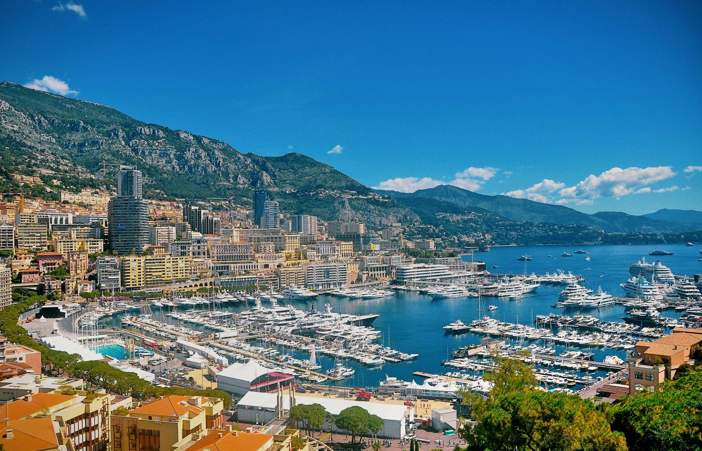

Monte-Carlo Rally 2027: dates, route and where to watch
From 21 to 24 January 2027, the 95th edition opens the World Rally Championship on the mountain roads between Gap and Monaco.
Photo: Victor He / Unsplash
The Rallye Automobile Monte-Carlo is the opening round of the World Rally Championship (WRC). Run by the Automobile Club de Monaco, it takes place in midwinter on the narrow roads of the Southern Alps, where snow and ice change everything from one stage to the next.
The 2027 dates
- Competition: Thursday 21 to Sunday 24 January 2027.
- Rally week: reconnaissance and events start on Monday 18 January in Monaco.
- Service park: in Gap, in the Hautes-Alpes, as in previous years.
- Finish: on Port Hercule in Monaco on Sunday 24 January.
Where to see the cars
In Monaco, the easiest place is Port Hercule, home to the start, the finish and the podium on Quai Albert Ier. To see the cars racing, you need to head up to the stages in the Southern Alps: bring warm clothes, arrive early and stay in the spectator areas. The detailed route is published by the Automobile Club de Monaco.
Getting to Monaco during the rally
- By train: TER trains on the Nice–Ventimiglia line stop at Monaco-Monte-Carlo station, a few minutes’ walk from Port Hercule.
- By bus from Nice: Zou! line 602 runs along the Middle Corniche, stopping in Èze.
- By car: Monaco’s public car parks, such as the Parking des Pêcheurs below the Rock, are in high demand during rally week.
- Getting back: Uber rides cannot be booked from Monaco; plan for the train, the bus, a Monaco taxi or a driver booked in advance.
The Monte-Carlo Historic Rally
A week later, from 27 January to 3 February 2027, the 29th Rallye Monte-Carlo Historique sees classic cars set off from several European cities and finish in Monaco.
Our tips
- Book your hotel early: Monaco and the nearby towns fill up during rally week.
- Come by train: Monaco station is linked to Nice and Menton by TER trains, easier than looking for parking.
- Make the most of your stay: the Rock, the Oceanographic Museum and the Exotic Garden are open in January.
What to see in Monaco


Tours and activities
Monaco tours and Riviera day trips: book for rally week.
-
Monaco tickets and tours
Oceanographic Museum, Prince’s Palace, guided walks on the Rock.
-
Monaco, Èze and Riviera day trips
Small-group days from Nice or Cannes.
-
Day trips from Nice
Monaco, Èze, Saint-Paul-de-Vence or the Verdon Gorge in a day.
Partner links.
Frequently asked questions
When is the Monte-Carlo Rally 2027?
The 95th edition runs from Thursday 21 to Sunday 24 January 2027, finishing on Port Hercule in Monaco.
Where is the Monte-Carlo Rally service park?
In Gap, in the Hautes-Alpes.
When is the 2027 Monte-Carlo Historic Rally?
From 27 January to 3 February 2027, for its 29th edition.